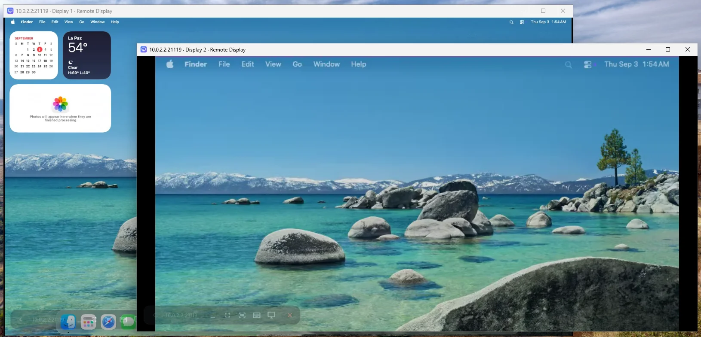

Remote desktop for your Mac from Windows, iPad or another Mac, built on the open-source RustDesk engine, with virtual monitors that resize to the window you are looking at. Self-hosted: no accounts, no cloud.

Everything a remote desktop should do, plus the one thing none of them did: monitors the size of your window.
Create a virtual monitor from the client: it is born at your window's size. Fit to screen resizes it in place at any time; the display ID never changes, so the session never blinks.
Fit to screen on the Mac's real display mirrors it onto a virtual main that follows your window. Flip the switch on the physical monitor to get it back.
100, 125, 150 or 200 %, like Windows display scaling. Retina (2× backing) when macOS allows it, otherwise the same scale with fewer points.
Your PC and your iPad each remember their own monitor layout and apply it when they connect, even after the server restarts.
Open any monitor in its own window, or show them all at once. Monitors are numbered in order; the trash icon removes a virtual one.
Direct connection on your LAN or VPN with a password you set. No accounts, no IDs, no third-party servers. Everything is open source.
Black bars, scrolling, or a tiny picture of a 4K display. Virtual machines solved this years ago: in Tart the guest display simply becomes the size of your window. Remote Display started as a fork of RustDesk to control a Mac Studio from a Windows PC over Tailscale, and does that for a real Mac: it creates virtual monitors on the host and keeps them the size of the window you are looking at. It can make the Mac's physical monitor dynamic too.
Remote Display is a fork of RustDesk 1.4.9. The engine, the protocol and the client plumbing are RustDesk's; the native virtual display backend for macOS, the per-monitor scale and the per-client profiles are what this project adds.
Screen capture, video encoding, input injection and the encrypted direct connection all come from the RustDesk engine, vendored with its changes documented in the repository. Remote Display would not exist without it.
A menu-bar app bundling the engine. Virtual monitors are CGVirtualDisplays created in-process and resized in place, so their IDs stay stable and the session never blinks. Each one keeps a stable identity, which is what stops macOS from generating a new ICC profile per display (the ColorSync leak).
A Flutter app on top of the same engine. It owns the monitor profile for each Mac it connects to and reconciles the server with it on connect.
RustDesk's protocol over a direct IP connection, no rendezvous or relay. LAN peers are discovered automatically; over the internet use a VPN such as Tailscale.
macOS 26 has quirks around virtual displays (HiDPI mode selection, mirror sets dissolving on mode changes, per-process display lists). The repository keeps the harnesses that measured them.
A server on the Mac, a client wherever you are.
Install Remote Display Server from the DMG, turn the service on, grant Screen Recording and Accessibility, and set a password. It lives in the menu bar.
macOS builds are signed ad hoc for now, so Gatekeeper will object once. Right-click → Open, or go to System Settings → Privacy & Security and click Open Anyway.
Connect to the Mac's IP on port 21118 with that password. Machines on the same LAN show up by themselves. Then open the display menu in the toolbar: create a virtual monitor, hit Fit to screen, pick a scale.
All downloadsEvery build is published on GitHub Releases. Install the server on the Mac you want to reach, then a client on each device you connect from.
A menu-bar app for the Mac you connect to. Signed ad hoc for now: right-click → Open the first time.
Latest release · All releases on GitHub →
Remote Display uses a private Apple API and talks directly to your Mac. Here's what that means in practice.
Retina (2×) virtual monitors need a requested width of at least 1920 pixels; below that macOS 26 only offers the 1× variant and the scale is emulated with fewer points.
CGVirtualDisplay is a private API: no Mac App Store, and behaviour may change between macOS versions.
No relay yet: connections are direct, on your LAN or through a VPN.
macOS builds are Apple silicon only for now and signed ad hoc; right-click → Open the first time. The iOS build uses development signing.
Remote Display is free software built on RustDesk: the engine inside is a modified copy of RustDesk 1.4.9 (AGPL-3.0), and the idea of a display that becomes the window comes from Tart. RustDesk is a trademark of its owners; this project is not affiliated with or endorsed by them. Contributions of all kinds are welcome.